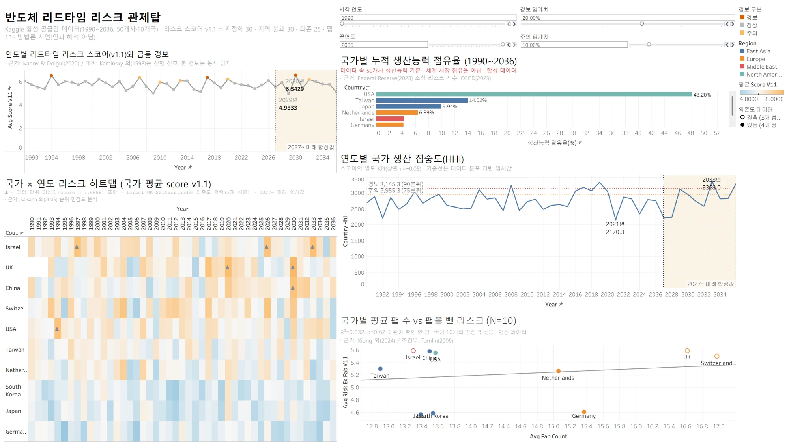
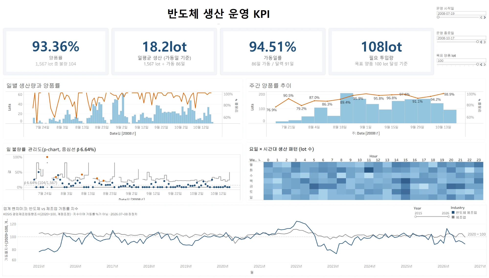
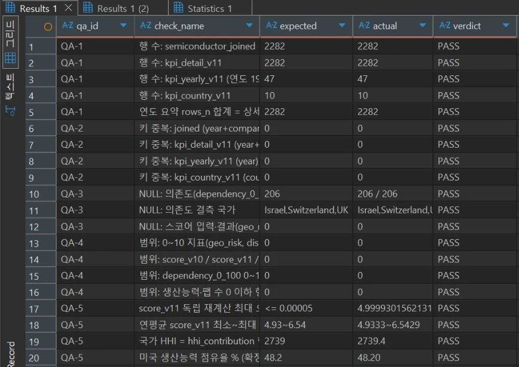
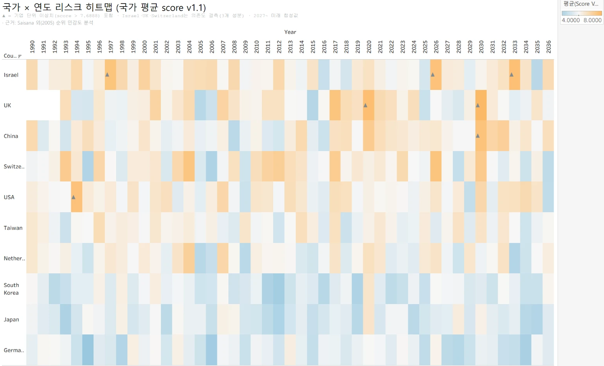
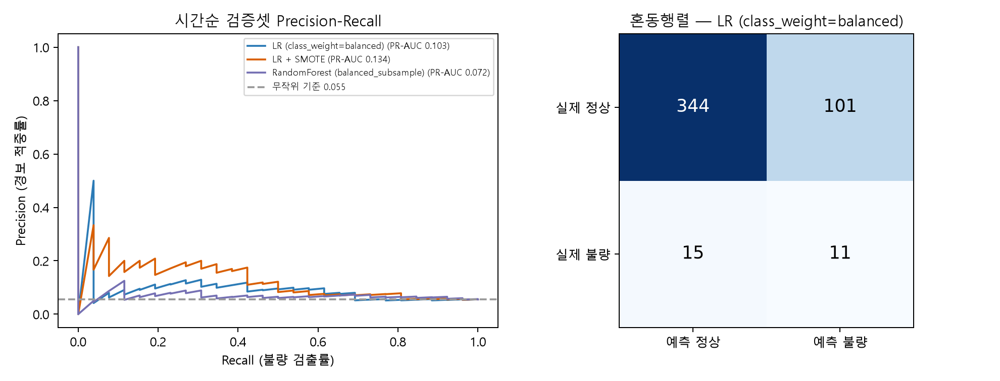

SQL·Tableau로 구축한
생산 리드타임 BI 시스템
생산 리드타임, 생산 파라미터, 외부 리스크 데이터를 한 화면에 모아 투입과 출하 계획을 클릭 몇 번으로 판단하는 대시보드
연도별 리드타임 리스크 점수, 1990-2036
기준 산업: 반도체 / 적용 가능: 이차전지, 물류, GMP, 전자 등 제조·물류 전반
프로젝트 요약
문제 정의부터 대시보드 운영까지, 흩어진 생산 정보를 계획 판단 화면으로
문제
반도체 생산능력은 6.76배 커졌지만, 리드타임을 늘리는 외부 리스크(지정학, 지역 붕괴, 공급망 의존)는 줄지 않음 (추세 −0.0031/년, p=0.45)
이 정보가 생산, 품질, 공급망 표에 흩어져 있어 계획 담당자가 한눈에 보기 어려움
방법
흩어진 원본 CSV 8개를 SQL로 정제·결합해 판단 지표(리스크 점수, 집중도, 양품률, 필요 투입량) 생성
Tableau 대시보드 2개로 시각화, Python으로 전 과정을 다시 돌려 같은 결과인지 자동 확인
결과
기간, 목표, 경보 기준만 바꾸면 바로 다시 계산되는 계획 대시보드
위험 급등 연도 5/5 포착, 공정 이상일 5일 식별, 목표 양품 100 lot에 필요한 투입 108 lot 즉시 산출
SQLite 테이블
원본 8개를 정제·결합해 분석용 표 11개를 더 만든 데이터베이스
Tableau 대시보드
D1 공급망 리스크 관제, D2 생산 운영 KPI
자동 재계산 검증
처음부터 다시 만든 표 9개가 기존 결과와 완전히 같음
화면 숫자 검증
대시보드 숫자 35개를 원본 데이터로 다시 계산해 모두 일치
연구 목표
필요한 데이터를 대시보드로 쉽게 파악 → 투입·출하 계획을 클릭 몇 번으로 조정
계획 담당자가 매번 확인하는 질문
Q아이템별 cycle time은 얼마지?
Q지금 쓸 수 있는 capa는 얼마지?
Q양품률은 어느 정도지?
Q현재 가동률은 몇 %지?
Q재공과 재고는 얼마나 있지?
Q어느 공정(라인)에서 특이사항이 발생하고 있지?
Q양품률이 낮다면 재작업, 별도품, 수정은 얼마나 나왔지?
긴급 건이 생기면 영업·공급 담당자와 소요량·공급 계획을 조정해 빠르게 계획을 다시 세워야 함
문제 상황
- 답에 필요한 데이터가 생산, 품질, 공급망 표에 흩어져 있어 매번 찾아서 계산
- 반도체, 이차전지, 완성차, 대형 물류처럼 공정과 공급망이 복잡할수록 capa·리드타임 계산이 어려움
- 지정학, 공급망 차질 같은 외부 리스크까지 겹치면 리드타임 변동을 미리 보기 어려움
최종 목표
필요한 정보를 클릭 몇 번으로 파악하고 이해할 수 있는 대시보드
- 수단: 리스크·생산 KPI 설계, 경보 기준, 기간·목표 매개변수
- 데이터는 주기적 갱신 필요 → 재현 파이프라인으로 갱신·검증 자동화
대상 사용자생산계획·S&OP 담당, 구매·소싱, 품질(공정) 엔지니어
사전 점검을 통한 연구 질문 재설계
현장 질문을 반도체 데이터로 답할 수 있게 바꾸고, 맞지 않는 가설 3개는 분석 전에 조정
리드타임을 흔드는 요인은 뭐지?
RQ1공급 리스크 점수를 공급 지역(지정학), 공급망 붕괴, 공급망 의존, 생산 거점(팹) 4가지로 나누고, 필요하면 가중치를 보정해 어떤 요인이 큰지 확인
붕괴가 주원인이라는 가설은 점수 안에 붕괴가 이미 들어 있어 답이 정해진 질문 → 가설 대신 요인별 기여도로 보고 (지정학 45%, 붕괴 26%, 의존 16%, 팹 13%)
가용 capa가 한 곳에 몰려 있진 않나?
RQ2국가별 생산 집중도(HHI)와 팹 수가 공급망 리스크와 어떤 관계인지 확인
수출 상대국이 많으면 안전하다는 가설 → 데이터의 수출 상대국 수가 9개, 10개 두 값뿐이라 비교 불가 → 실제로 차이가 나는 팹 수와 HHI로 바꿔 확인
민감한 공급망 변화에 빠르게 대응할 수 있나?
RQ3리스크 점수가 작년보다 크게 오른 해를 경보(+10%, +20%)로 얼마나 잡아내는지 확인
미리 예측한다는 가설 → 증가율은 그 해 값이 나와야 계산됨 → 목표를 그 해에 바로 감지로 조정 (위험 상위 5개 연도 5/5 감지)
양품률·가동률이면 얼마나 투입해야 하지?
공정SECOM 공정 데이터의 양품률과 가동일률로 목표 양품에 필요한 투입량 계산
공급망 데이터와 이어 붙일 키가 없어 별도 트랙(D2 대시보드)으로 분리
범위 포함: 공급망 리스크 KPI·대시보드, 공정 품질(별도 트랙) / 제외: 인과 추정, 실측 리드타임 예측
인터랙티브 대시보드
Tableau 대시보드 2개를 같은 데이터로 웹에 다시 구현. 기간, 경보 기준, 목표를 바꾸면 바로 다시 계산
대시보드
데이터: semiconductor_analysis_v1.1.db
화면 숫자 35/35 Tableau와 일치
연도별 리드타임 리스크 점수
점 = 작년보다 경보 기준 넘게 오른 해, 음영 = 2027년 이후 미래 합성값
나라별 생산 점유율
전 기간 누적, 막대 옆 숫자 = 평균 리스크 점수
연도별 생산 집중도(HHI)
점선 = 주의 2,955.3 / 경보 3,145.3 (분포의 75·90% 지점)
일별 불량률 관리도 (p-chart)
p̄ = 104/1,567 = 6.64%, 선 = 3시그마 상한(UCL), 주황 점 = 상한을 넘은 날

Tableau 원본 화면: D1 리스크 급등 동시 탐지를 위한 관제 화면이 화면으로 할 수 있는 것
활용 장면월간 S&OP 회의에서 경보가 뜬 해·나라를 바로 짚고, 어떤 요인(지정학, 지역 붕괴, 의존, 팹)이 원인인지 확인

Tableau 원본 화면: D2 목표 변경에 따른 필요 투입량 즉시 산출이 화면으로 할 수 있는 것
활용 장면투입 계획·출하 일정을 조정할 때, 긴급 건이 생기면 필요한 투입량을 그 자리에서 확인
분석 과정
근거 확인, 데이터 정리, SQL 지표 설계, 자동화까지 단계마다 끝났다고 볼 기준을 먼저 정해 진행
문헌 검토
질문마다 근거 논문을 먼저 확인 → 방향이 맞다는 걸 확인한 뒤 분석
확인 방법
저자, 연도, 학술지, DOI는 Crossref 원본과, 내용은 OpenAlex와 출판사 원문으로 직접 대조. 지금 데이터에 꼭 맞는 논문이 없으면 근거를 과장하지 않음
| 연구 질문 | 근거 논문 | 논문이 확인해 준 내용 | 우리 작업에 반영 |
|---|---|---|---|
| RQ1 리스크 요인 | Xiong 외 (2024) 공급망 회복탄력성, Moktadir & Ren (2024) 회복탄력성 과제, Saisana 외 (2005) 합성지표 평가 | 지정학 긴장, 공급자 집중 같은 외부 충격이 반도체 공급망 차질의 핵심 원인 / 합성 점수는 가중치 민감도로 확인해야 함 | 점수를 4개 외부 요인으로 구성, 가중치 4가지로 민감도 확인 |
| RQ2 집중도 | 미 연준 Fed (2023) 소싱 리스크 지수, OECD (2023) 반도체 공급망 취약성 | 소싱 리스크 지수에 공급자 집중도(HHI)를 1/3 비중으로 따로 넣음 / 국가 간 의존 관계를 지도화 | HHI를 점수와 별도 KPI로 관리 |
| RQ3 경보·관제 | Ivanov & Dolgui (2020) 디지털 공급망 트윈, Barratt & Oke (2007) 공급망 가시성, Kaminsky 외 (1998) 조기경보 | 실시간 가시성이 차질 대응을 돕고, 가시성은 운영 루틴이 있어야 효과 / 임계치 신호 방식의 조기경보 | 경보 임계치 매개변수 + 담당·주기 운영 루틴 설계 |
| 공정 품질 | Park 외 (2024) SECOM 전처리, Woodall (2000) 관리도(SPC), UCI SECOM 원본 데이터 | SECOM 전처리와 데이터 누수 방지 / 관리도 사용 근거 / 원본 라벨 파일 시각 형식 | 누수 없는 모델 평가, p-chart, 날짜 보정 검증 |
| 배경 리드타임 | Rosman 외 (2024) 반도체 안전재고 시뮬레이션 | 반도체 전공정 10~15주, 후공정 1~2주 | 리드타임이 긴 산업이라는 문제 배경 |
인사이트 근거 연결분석으로 얻은 인사이트 6개 모두 근거 논문 1편 이상과 연결 → 연구 결과에서 분석 결과와 다시 비교
진행 방식
6단계로 나누고, 단계마다 끝났다고 볼 기준을 먼저 정해 진행
기획·문제 정의
4~6월주제 선정, 공개 데이터 탐색, 현장 질문 정리 → 연구 질문·가설 설계, 데이터로 가설 사전 점검
문제정의서데이터 정리
6~8월CSV 8개 SQLite 적재·결합, 전처리 규칙 13개, 데이터 사전 42열, 품질 검사 20건, 결측·날짜 오류 정정
정제 DB, 데이터 사전분석
6~8월리스크 점수, 가중치 민감도, what-if, 공정 품질(관리도) 분석, 불량 예측 모델
인사이트 6개, 해결방안문헌 확인
9월연구 질문과 인사이트마다 근거·반박 논문 확인, 분석 결과와 비교
논문 18편 대응표대시보드 구축
9~10월Tableau D1·D2, 기간·목표·경보 매개변수, 화면 숫자 35개를 DB와 대조
대시보드 2개, QA 로그자동화·정리
9~10월Python 재현 파이프라인, KOSIS 업계 지표 추가, 결론 문서, 포트폴리오
재현 스크립트, 결론 문서작업 원칙
데이터 9종 점검·정리
9종 데이터의 내용과 상태를 먼저 확인·정리
| 데이터 | 규모 | 담긴 정보 | 점검·작업 |
|---|---|---|---|
| 생산 | 2,282행 | 기업별 연간 생산능력, 팹 수, 공정 노드, 점유율 | 결합 기준 표 / 노드 값 '1731nm' 문자 → 숫자 |
| 공정 노드 | 2,282행 | 노드 크기, 트랜지스터 집적도, R&D, 특허 | 기업·연도로 연결 |
| AI 수요 | 1,880행 | 국가별 GPU 수요, 데이터센터, AI 투자 | 국가·연도로 연결 (10개국 모두 매칭) |
| 무역 | 3,948행 | 수출입액, 물류 경로, 공급망 의존도 | 수출국별로 먼저 집계 / 3개국은 수출 기록 없음 |
| 지정학 | 1,880행 | 수출 통제, 제재, 무역 긴장, 안보 리스크 | 점수의 지정학 성분 |
| 지역 붕괴 | 329행 | 자연재해, 에너지, 물 부족, 공장 중단 위험 | 국가 → 지역 매핑 후 연결 |
| 시장 | 47행 | 연도별 시장 매출, 칩 가격, 성장률 | 연도로 연결 (행마다 반복돼 합계 금지) |
| UCI SECOM | 1,567 lot | 공정 센서 590개 + 양품/불량 결과 | 값이 하나뿐인 열 116개, 결측 많은 열 28개 확인, 날짜 오류 보정 |
| KOSIS | 140개월 | 반도체·제조업 생산능력, 가동률 지수 (실측) | 업계 비교용 벤치마크 |
공통 점검: 키 중복 0건, 1990~2036년 47개 연도 누락 없음, 결합 후 행 수 2,282 유지, 원본 파일은 수정하지 않음
- 공급망 7종은 Kaggle 합성 데이터(미래 2027~2036 포함) → 실제 시장 진단이 아닌 방법론 시연
- 공급망과 공정(SECOM) 데이터는 연결할 키가 없어 따로 분석
- 무역 기록이 없는 3개국(206행)은 의존도가 빈 값 → 문제 해결에서 처리 방법 결정
CSV 8종의 SQLite 적재와 20개 항목 품질 검사
흩어진 표 7개를 SQL로 하나로 연결하고, 20개 검사로 숫자를 확인
SQL로 한 작업
- 생산 표를 기준으로 공정 노드, AI 수요, 지정학, 지역 붕괴, 무역, 시장 6개 표를 연도·기업·국가로 연결 → 2,282행 42열
- 무역은 수출국별로 먼저 집계 → 안 하면 19,031행으로 불어남
- 지역 붕괴는 국가 → 지역 매핑 표를 만들어 연결, 노드 값 문자 → 숫자
- 결합 표로 분석용 마트 3개(기업×연도, 연도별, 국가별) 생성 → Tableau 연결
검사·기록
- 품질 검사 20건(행 수 5, 키 중복 4, 빈 값 3, 값 범위 4, 점수 재계산 4) 전부 PASS
- 데이터 사전에 42개 열의 뜻, 단위, 출처 기록

SQL로 만든 리드타임 리스크 점수
위험 요인 4개를 0~10점 하나로 → 가중치를 바꿔도 상위 그룹은 그대로
점수 만드는 법
- 4개 요인을 모두 0~10점으로 맞춤 (의존도 0~100은 ÷10, 팹은 많을수록 낮은 점수)
- 가중치를 곱해 더함 (30 / 30 / 25 / 15)
- 빈 요인이 있으면 빼고 나머지 가중치 합으로 나눔
CREATE TABLE kpi_detail_v11 AS WITH w(w_geo, w_dis, w_dep, w_fab) AS (SELECT 0.30, 0.30, 0.25, 0.15), -- 가중치는 여기서만 바꾸기 mx(max_fab) AS (SELECT MAX(fab_count) FROM semiconductor_joined), base AS ( SELECT j.*, 10 - j.fab_count * 1.0 / mx.max_fab * 10 AS fab_term, -- 팹 적을수록 점수 높게 j.avg_supply_chain_dependency / 10.0 AS dep_term, CASE WHEN j.avg_supply_chain_dependency IS NULL THEN 1 ELSE 0 END AS dep_missing_flag FROM semiconductor_joined j, mx
가중치를 이렇게 정한 이유
가중치는 문헌 구조를 참고해 정한 값 → 아래처럼 4가지 방식으로 바꿔 계산해 결과가 유지되는지 검증
| 방식 | 가중치 | S1과 순위 상관 |
|---|---|---|
| S1 | 현재 30/30/25/15 | 기준 |
| S2 | Fed 지수형 50/17/33/0 | 0.90 |
| S3 | 모두 같게 25×4 | 0.96 |
| S4 | Fed + 집중도(HHI) | 0.76 |
1이면 순위가 똑같음 → 상위 연도·국가 그룹은 어느 방식이든 유지, 세부 순위만 일부 바뀜
Python 재현 파이프라인과 대시보드 QA 체계
반복 작업을 코드로 → 데이터가 바뀌어도 4초 안에 다시 만들고 검증
왜 Python인가데이터가 바뀔 때마다 SQL 실행 → 검사 20건 → 결과 대조를 손으로 하면 오래 걸리고 실수가 생김 → 한 번 실행으로 처음부터 다시 만들고 검증까지 자동으로
원본 8개로 DB를 새로 만듦
정제·결합·마트 SQL 4개를 순서대로
검사 20건 자동 판정
기준 DB와 결과 표 9개 값 비교
Tableau용 파일 생성
$ python 04_python/run_all.py [1 load_raw] raw_secom 1567행 PASS [2 run_sql] 실행: 01_staging_secom_v1.1.sql [3 validate] QA 20건 중 PASS 20건 [4 reproduce] kpi_detail_v11 2282행 최대 차이 0.00e+00 → 일치 secom_time_v11 1567행 최대 차이 0.00e+00 → 일치 결과: raw 8/8, QA 20/20, 재현 9/9 → 전부 통과
Python으로 한 다른 작업
- SECOM 불량 예측 모델 (scikit-learn, 시간순 분할, 불균형 보정)
- 통계 검정: 상관, p값, χ²로 우연인지 확인
- KOSIS 엑셀 변환: 140개월 업계 지표 정리
찾아서 고친 것
첫 실행에서 표 2개가 불일치 → 소수 마지막 자리 차이(≤ 3×10⁻¹⁶)로 원인 찾아 읽는 방식 수정 → 완전 일치
재구축·검증
데이터 갱신 시 수작업 없음
화면 숫자 대조
대시보드 값 = DB 값
문제 해결
데이터 결함과 두 가지 난관을 분석 전에 찾아 정정, 잘못된 결론을 사전 차단
결측값 0점 처리 결함의 발견과 정정
비유하면 시험을 안 본 과목을 0점 처리해 평균이 떨어진 것과 같은 문제. 데이터가 없는 것과 0점은 다름
ROUND( -- v1.0 점수. NULL을 0으로 넣는 문제 있음(비교용) COALESCE(r.semiconductor_security_risk, 0) * 0.30 + COALESCE(s.supply_disruption_index, 0) * 0.30 + COALESCE(ta.avg_supply_chain_dependency, 0) / 10 * 0.25 + (10 - (...fab_count...) * 10) * 0.15 , 2) AS leadtime_risk_score
보정 기준과 근거
공개 데이터의 결합과 서로 다른 데이터, 두 난관의 해결
분석을 진행하다 두 가지 난관을 만남: 형식이 제각각인 공개 데이터와 서로 이어 붙일 수 없는 데이터
날짜·컬럼·형식이 제각각인 데이터를 SQL로 하나로
-- 원본 시간이 dd/mm 형식이었는데 일<=12인 행은 일/월이 뒤바뀌어 있었음 -- 582행 바꾸니까 시간 역행 6곳 -> 0곳, 기간도 12개월 -> 4개월(07-19 ~ 10-17) process_time AS process_time_raw, -- 원본 그대로 둠 CASE WHEN CAST(SUBSTR(process_time, 9, 2) AS INT) <= 12 THEN SUBSTR(process_time, 1, 5) || SUBSTR(process_time, 9, 2) || '-' || SUBSTR(process_time, 6, 2) || SUBSTR(process_time, 11) ELSE process_time END AS process_time,
공급망·공정·업계 데이터는 공통 키가 없음
두 난관에서 정한 작업 원칙
연구 결과
규모보다 외부 리스크와 생산 쏠림을 따로 봐야 하고, 경보와 관리도로 바로 행동까지
규모 성장과 무관한 리드타임 리스크
규모보다 외부 리스크와 생산 쏠림을 따로 봐야 함
생산능력이 커져도
리스크 점수는 4.93~6.54 사이를 오르내릴 뿐 줄지 않음
생산을 늘려도 공급 차질 위험은 그대로 → capa 계획과 별도로 리스크 관리 필요
미국 생산 집중
2위 대만 14.02%의 3.4배, 쏠림(HHI)은 점수와 따로 움직임
한 나라의 정책·재해가 전체 공급에 바로 영향 → 대체 공급처·안전재고 검토 근거
팹 수와 위험
팹이 많은 나라가 더 안전하다는 근거 없음 (10개국 비교)
팹 수만 보고 안전하다고 판단하면 안 됨 → 지정학·지역 요인을 함께 봐야 함
위험 상위 10개 중
8개가 무역 기록 없는 3개국
데이터가 비어 있는 나라는 판단 전에 추가 자료 확인 필요
HHI 차트가 보여 주는 것
연도별로 생산이 한 나라에 얼마나 몰렸는지(HHI). 2021년 2,170.3으로 가장 고르고, 2033년 3,368.0으로 가장 쏠림
읽는 법
점선 위로 올라가면 쏠림 주의(2,955.3), 경보(3,145.3). 이 데이터 분포의 75·90% 지점을 임시 기준으로 사용
활용
경보 구간에 들어간 해에는 대체 공급처와 안전재고를 먼저 검토. 2027년 이후 음영은 미래 합성값 (위 대시보드 D1에서 직접 확인)
백테스트 기반 경보 임계치 설정
+10%는 놓치지 않는 기준, +20%는 틀리지 않는 기준 → 회의에서 골라 쓰도록 매개변수화
| 경보 기준 | 울린 횟수 | 위험 상위 5년 포착 | 맞은 비율 |
|---|---|---|---|
| +10% | 8회 | 5 / 5 | 62.5% |
| +20% | 3회 | 3 / 5 | 100% |
경보 = 점수가 작년보다 10%(20%) 넘게 오르면 알림 / 포착 = 가장 위험했던 5개 연도 중 잡아낸 수 / 맞은 비율 = 울린 경보 중 실제 위험 연도였던 비율
어떻게 쓰나
- 놓치면 안 될 때는 +10%(다 잡지만 가끔 헛경보), 헛경보가 부담일 때는 +20%(적게 울리지만 다 맞음)
- 두 기준을 대시보드 매개변수로 두어 회의에서 바로 바꿔 봄
- 작년 대비라 그 해 값이 나와야 계산되는 같은 해 탐지

히트맵 읽는 법
- 가로 = 연도, 세로 = 나라
- 주황일수록 위험 점수가 높고, 파랑일수록 낮음
- ▲ = 기업 단위 이상치 → 무역 기록 없는 3개국 쪽에 몰림
정확도 94%의 함정, 불량 검출 중심의 모델 평가
정확도가 아니라 불량을 몇 개 잡았는지로 평가
월별 불량률
7월 22.22% → 9월 2.88%. 같은 공정도 시기에 따라 품질이 크게 바뀜 (통계적으로 유의, p<0.001)
관리도(p-chart)로 이상일 찾기
- 하루 불량률이 정상 범위(UCL 선)를 넘은 날을 표시 → 4개월 중 5일
- 요일·시간대별 차이는 통계적으로 확인 안 됨 → 근거 없는 주장은 하지 않음
불량 예측 모델, 무엇으로 평가했나
- 검출률: 실제 불량 중 몇 개를 찾았나 → 26건 중 11건(42.3%)
- G-mean: 정상과 불량을 고르게 맞히는지 → 0.572
- 시간 순서대로 학습·평가해 실제 운영 조건과 같게 (무작위로 섞으면 0.701로 부풀려짐)
- 맞은 비율 9.8% → 자동 판정보다 먼저 점검할 lot 추천용

문헌과의 비교·검증
분석 결과를 논문과 맞대어, 방향과 효과가 유효한지 확인
| 우리 분석 결과 | 비교한 논문 | 판정 | 관계, 정리 |
|---|---|---|---|
| 규모 6.76배 증가에도 리스크 추세 없음 | Xiong 외 (2024) 반도체 공급망 회복탄력성 리뷰, Moktadir & Ren (2024) 회복탄력성 과제 분석, 반도체 부족 사태 연구 2편 | 부분 지지 | 같은 방향 외부 교란이 산업 전체 차질을 좌우한다는 주장과 같은 방향 (인과는 아님) |
| 미국 집중 48.20% → 별도 KPI | 미 연준(Fed, 2023) 소싱 리스크 지수, OECD (2023) 반도체 공급망 취약성 | 지지 | 방법 일치 Fed 지수도 공급자 집중도(HHI)를 1/3 비중으로 따로 넣음 |
| 팹 수와 위험의 관계 확인 안 됨 | Tomlin (2006) 공급 차질 대응 전략 | 조건부 | 다른 조건 설비 중복의 효과는 차질이 잦은지, 긴지에 따라 달라짐 → 우리 결과와 모순 아님 |
| 빈 값 3개국 순위가 처리 방식에 민감 | Saisana 외 (2005) 합성지표 품질 평가 | 방법론 지지 | 권고 이행 합성 점수 순위는 민감도로 확인하라는 권고대로 결측·가중치 민감도 수행 |
| +10% 경보는 같은 해 탐지 | Kaminsky 외 (1998) 위기 조기경보 지표 | 대비 | 반대 시각 표준 조기경보는 최대 24개월 전 신호 → 우리 경보는 같은 해 탐지라는 범위를 분명히 함 |
| SECOM 불량 예측 성능 | Park 외 (2024) SECOM 전처리 연구 | 재현 | 결과 비교 G-mean 72.95% vs 우리 무작위 분할 70.1%로 비슷 → 시간순으로 나누면 57.2% (모형·변수는 다름) |
가중치 비교: Fed 지수 vs 우리 점수
Fed 구조로 바꿔 계산해도 국가 순위 상관 0.90, 0.76 → 상위·하위 그룹 유지
검증 방법
경보부터 조치까지, 운영 체계
숫자로 보는 효과 + 경보마다 담당·주기·대응을 정해 바로 행동으로
위험 급등 연도
같은 해에 모두 포착 (+10% 기준)
공정 이상일
4개월 중 관리도로 바로 식별
필요 투입량
목표 양품 100 lot 기준 즉시 계산
생산 쏠림 완화(가정)
미국 점유 5%p 분산 시 HHI
A 공급 다변화분기
기준HHI 주의 2,955.3 / 경보 3,145.3
대응대체 공급처 검토
B 의존도 관리분기
기준의존도 주의 54.23 / 경보 59.33
대응빈 값 나라 따로 표시
C 급등 경보월
기준+10% 주의 / +20% 경보
대응S&OP 안건 상정, 원인 기록
D 물류 경로분기
기준지역 붕괴 주의 6.9982 / 경보 7.9705
대응대체 경로 미리 지정
E 공정 관리도매일
기준UCL 초과
대응해당 lot 센서 점검
운영 효과흩어진 데이터를 매번 찾아 계산하던 일 → 정해진 주기(매일, 매월, 분기, 연 1회)에 화면 하나로 확인·판단·조치
결론 및 기대효과
클릭 몇 번으로 판단하는 계획 화면, 같은 구조로 물류 등 다른 산업에도 적용 가능
성과와 가치
- 계획 질문에 바로 답하는 화면 리스크 흐름, 경보 연도, 필요 투입량을 매개변수만 바꿔 즉시 확인
- BI 전 과정을 직접 설계·구현 문제 정의 → SQL 정제·마트 → Tableau → Python 자동화 → 문헌 검증
- 숫자를 믿기 전에 원본까지 확인 빈 값 0점 처리, 날짜 뒤바뀜, 데이터 결합 문제를 찾아 잘못된 결론을 사전 차단
- 검증을 구조로 품질 검사 20건, 재현 9/9, 화면 값 35/35
- 도구 활용 SQL·Python 초안과 문헌 탐색에 AI를 활용해 속도를 높이고, 숫자는 직접 대조·승인
물류 산업 적용 가능성
공급망 리스크, 리드타임, capa 계산은 물류의 운송 리드타임, 센터 capa와 같은 구조
- 배송 리드타임·지연률을 센터·운송사별 KPI 카드로
- 물동량·지연 급등을 전주·전년 대비 경보로
- 지연률 관리도로 이상 일자 탐지
- 목표 물량 → 필요 차량·인력 즉시 계산
- 매일 자동 갱신·검증 파이프라인
공급망 7종은 공개 합성 데이터(2027년 이후 미래 합성값 포함)로 방법론을 시연, 관계는 인과가 아닌 관찰. SECOM과 KOSIS는 실측 데이터